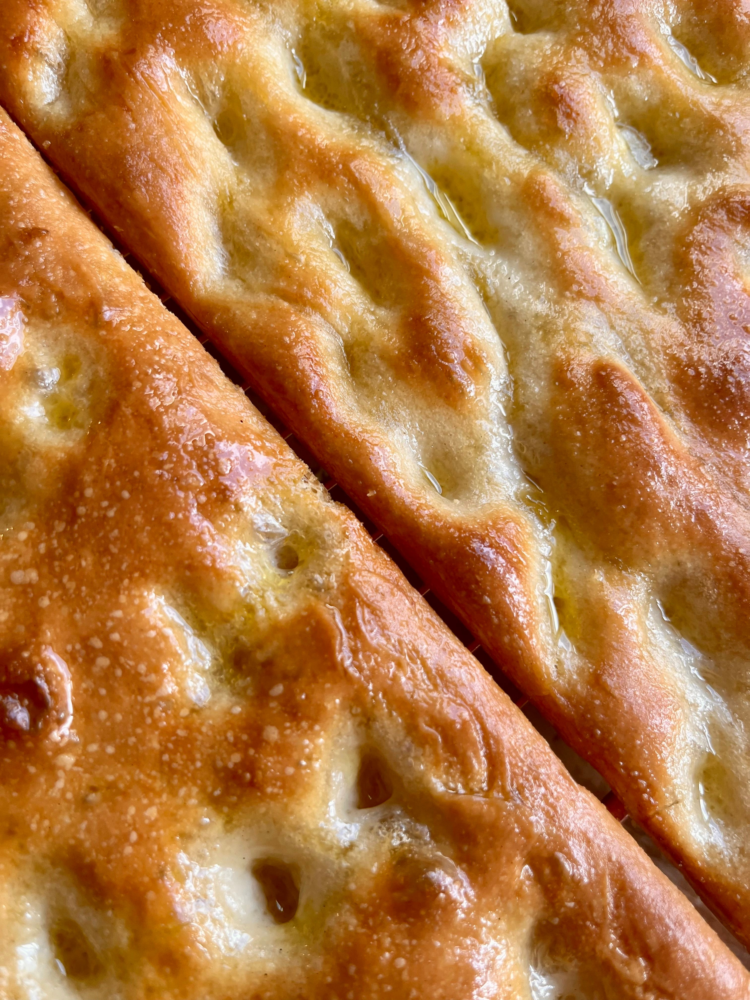

Ligurian Focaccia

Description
Characterized by its golden crust, fluffy interior, and crisp, olive oil-drenched exterior, focaccia has served as the country's chief flatbread since the days of the Etruscans of north central Italy, several thousand years ago. The bread is made with a combination of flour, salt, extra virgin olive oil, and a leavening agent, which is traditionally brewer's yeast. This all comes together in an aerated dough, which is pressed down by the baker's fingers and mottled with individual dimples. The bread is then drenched in more olive oil and salt before being baked in a hot oven. The result is a beautifully crispy exterior and a light, fluffy interior.
This type of focaccia, known as focaccia Genovevse or fügássa, is the kind everyone knows and loves. However, Liguria itself is home to several different types of focaccia, each with a different preparation. These breads have formed the core of the region's cuisine, and have each contributed to the high standard placed on focaccia from the region.
Ingredients
For the Dough:
- 2½ cups (600 grams) lukewarm water
- ½ teaspoon active dry yeast
- 2½ teaspoons (15 grams) honey
- 5 1/3 cups (800 grams) all-purpose flour
- 2 tablespoons (18 grams) Diamond Crystal Kosher salt or 1 tablespoon fine sea salt
- ¼ cup (50 grams) extra-virgin olive oil, plus more for pan and finishing
- Flaky salt for finishing
For the Brine
- 1½ teaspoons (5 grams) Diamond Crystal Kosher Salt
- ⅓ cup (80 grams) lukewarm water
Process
- In a medium bowl, stir together water, yeast, and honey to dissolve. In a very large bowl, whisk flour and salt together to combine and then add yeast mixture and olive oil. Stir with a rubber spatula until just incorporated, then scrape the sides of the bowl clean and cover with plastic wrap. Leave out at room temperature to ferment for 12 to 14 hours until at least doubled in volume.
- Spread 2 to 3 tablespoons oil evenly onto a 18-by-13 inch (46-by-33 cm) rimmed baking sheet. When dough is ready, use a spatula or your hand to release it from the sides of the bowl and fold it onto itself gently, then pour out onto pan. Pour an additional 2 tablespoons of olive oil over dough and gently spread across. Gently stretch the dough to the edge of the sheet by placing your hands underneath and pulling outward. The dough will shrink a bit, so repeat stretching once or twice over the course of 30 minutes to ensure dough remains stretched.
- Dimple the dough by pressing the pads of your first three fingers in at an angle. Make the brine by stirring together salt and water until salt is dissolved. Pour the brine over the dough to fill dimples. Proof focaccia for 45 minutes until the dough is light and bubbly.
- Thirty minutes into this final proof, adjust rack to center position and preheat oven to 450°F (235°C). If you have a baking stone, place it on rack. Otherwise, invert another sturdy baking sheet and place on rack. Allow to preheat with the oven until very hot, before proceeding with baking.
- Sprinkle focaccia with flaky salt. Bake for 25 to 30 minutes directly on top of stone or inverted pan until bottom crust is crisp and golden brown when checked with a metal spatula. To finish browning top crust, place focaccia on upper rack and bake for 5 to 7 minutes more.
- Remove from oven and brush or douse with 2 to 3 tablespoons oil over the whole surface (don’t worry if the olive pools in pockets, it will absorb as it sits). Let cool for 5 minutes, then release focaccia from pan with metal spatula and transfer to a cooling rack to cool completely.
- Serve warm or at room temperature.